皆さんはどのようにしてプログラムを作っていますか？
必要に応じて場当たり的にプログラムを作るのもひとつの方法ですが、大きなプログラムになるとそうはいかなくなってきます。
Javaに限らず、プログラムはテキストの形で記述するのが普通で、ひとめ見ただけでプログラムの各部分の依存関係を把握することは、たとえ小さなプログラムでも容易でない場合があります。
そこでプログラムを機能や構造によりいくつかの部分(オブジェクト)にわけてそれらの関連を図で表すと比較的容易に把握することができます。
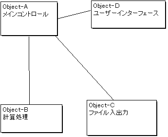
しかし大きなプログラムになると数多くのオブジェクトが存在し、それらの相互のデータの流れをひとつずつ書いていたら、やはり全体の把握が難しくなってきます。
そこでピンという概念を導入して、互いに関連する数個のオブジェクトをまとめて１つの親オブジェクトを作り、親オブジェクトの外にアクセスするためにピンを経由するようにするとオブジェクトの間の記述を簡単にできます。(いわゆる構造化分析に近い考え方です)
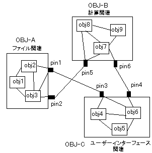
またメソッドの呼び出しのなかには例えば"close()"や"repaint()"のようにメソッド呼び出しだけが存在し、実質的なデータを持たないものも数多くあります。そのようなメソッド呼び出しはデータの流れだけでは表現できないので、
信号 = メソッド呼び出し + データ
という概念を導入してオブジェクト間の関連をより明確に表現できるようにしました。
※この接続図は構造化分析におけるデータフロー図と多少差異はありますが、同じような考えかたでシステムを分析・設計することができます。
これからJavaなどオブジェクト指向プログラミングを始められる方はその前に(ほんの少しだけ)構造化分析・設計の本を読むことをお勧めします。多分役に立つと思いますので．．．
状態図
接続図の説明で大きなオブジェクトはより小さなオブジェクトに分割できることを示しましたが、プログラムの大きさが有限である以上、この分割には限りがあり、いつかは"最小のオブジェクト"に到達します。
このようなオブジェクトの働きを表現するにはどうすればよいでしょうか？
皆さんもご存知のように、この世に存在するものすべては、なんらかの"状態"にあります。
この"状態"に着目して物(オブジェクト)の振る舞いを記述する方法のひとつに状態遷移図があります。
状態遷移図の例(水の三態)を下図に示します。
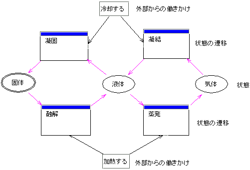
この状態遷移図に上で述べたピンと信号の概念を適用すると次のようになります。
ある状態から別の状態への遷移はピンからの信号によって引き起こされます。また遷移が完了するとピンに信号を出力します。遷移の種類は次の５種類に分類されます。
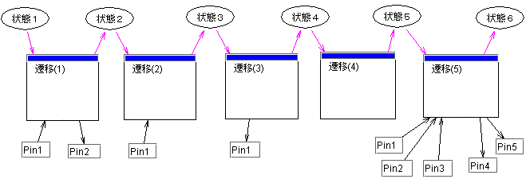
(1) ピンからの信号によって遷移して完了したときピンに信号を出力する
(2)ピンからの信号によって遷移して完了しても信号を出力しない
(3)信号なし(自動的)に遷移して完了したときピンに信号を出力する
(4)信号なし(自動的)に遷移して完了しても信号を出力しない
(5)複数のピンから信号を受け取り、遷移後に複数のピンに信号を出力する
インストールの前に
必要なソフト
(1) JRE,
JDK (必須、Java実行環境、コンパイラなど)
Oracle社のサイトからダウンロード
http://www.oracle.com/technetwork/java/javase/downloads/index.html
（Javaだけで十分という方はObjectEditorのインストールへ）
(2) C++ コンパイラ
(C++のプログラム開発に必要)
MinGW（GCC）
http://sourceforge.jp/projects/mingw/
MinGWの設定は金子邦彦先生のテキストが参考になりました、ありがとうございました
http://www.kkaneko.com/rinkou/cygwin/mingw.html
（android開発はしないという方はObjectEditorのインストールへ）
(3) ADBドライバ
(以下はandoroid開発に必要)
android端末製造元からダウンロード
ドライバが見つからないときにはこのページを参考にしました（ひろも様ありがとうございました）
http://www.teradas.net/archives/8088/
(4) android SDK
http://developer.android.com/sdk/index.htmlからダウンロード
このSDKにはeclipseが含まれています。eclipseはかなり高機能な開発ツールで、大抵のことはこれひとつで十分です。
もしeclipseで満足だと思うのでしたら、そちらを使用したほうがよいと思います。
その他、プログラミング言語のヘルプファイルや使いやすいテキストエディタもあると便利です。
圧縮ファイルを適当な場所で解凍して下さい、フォルダ"ObjectEdhitor10"が作成されてファイルが展開されます。
アンインストール
フォルダ"ObjectEditor10"を削除してください。
実行
ファイル"objedit.jar"をダブルクリックするか、コマンドプロンプトで"javaw -jar objedit.jar"とタイプして実行してください。
プログラムを実行すると新規作成のダイアログが出るので、作成するプログラムの種類(Java or C++)を選択します。
そうすると接続図エディタが起動します。このときオブジェクトの名前(つまりアプリケーションの名前)の入力欄が選択状態になるので、アプリケーション名を入力します(デフォルトは"NewApplication")
（起動直後の画面、赤い文字は説明です）

xobjectはプログラムやデータの集まりを一つのコンポーネントで表現したものです
名前が書いてあるボタンをクリックするとオブジェクトを記述するための接続図エディタが起動します。

aobjectもxobjectと同様にプログラムやデータの集まりですが、ボタンをクリックしたとき状態図エディタが起動するところが違います。

オブジェクトが他のオブジェクトとデータをやり取りするときに使います。pinの表示はJavaのメソッド呼出しのフォーマットに準じます。
またpinを作成するとき、同時にエディタで編集しているオブジェクト上にもpinが作られます。この２つのpinは同一のものとして取り扱われます。

信号線はpinの間のデータの流れ※を表現します。

※信号線の中には(1)のようにデータを含まないものがあるので、以後は"データの流れ"と呼ばずに"信号"と呼ぶことにします。
信号の伝わる順序
信号線のつけかたによって信号の伝わりかたが異なってくる場合があります。
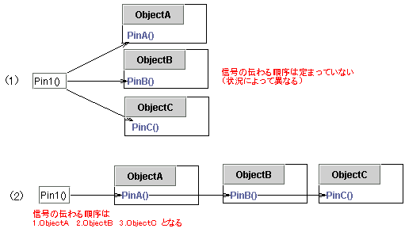
信号の伝わる順序が重要な場合は(1)のような使い方は避けた法がよいでしょう。
uobject( Uni-functional object )
uobjectもxobjectやaobjectと同じくプログラムやデータの集まりですが、このオブジェクトでは、直接Javaソースコードを記述します。
またuobjectのpinの数は、入力用および出力用がそれぞれ最大で１つに制限されており、その動作は入力用のpinに信号が到達すると記述されているJavaのコードを実行し、必要に応じて出力用のpinに信号を出すという、単一の関数によく似た振る舞いをします。

またuobjectはxobjectに変換することができます。この機能はuobjectを機能拡張するときに便利です。
まず、編集メニューの"Xオブジェクトに変換"を選択してから、変換したいuobjectをクリックするとxobjectに変換されます。
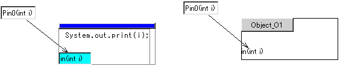
codeclipはソースコードの断片で直接Javaソースプログラムに挿入されます。
これはプロパティ変数や関数の定義など、接続図エディタや状態遷移図エディタで表現できない部分を記述するため設けられました。

codeclipはソースコードの一部となるので基本的にはJavaプログラムのすべての表現が使えます。
コンポーネントの集合を表すコンポーネントです。単独で使うのはあまり意味がありません。ツールメニューの"グループ"を選択して編集画面をクリックすると貼り付けられます。
移動や大きさを変えたりする方法は他の種類のコンポーネントと同じです。

グループはxobjectに変換することができます。編集メニューの"Xオブジェクトに変換"を選択してグループをクリックするとxobjectに変換され、信号の出入り口には自動的にpinが設置されます。

逆にxobjectをグループに変換することもできます。編集メニューの"グループに変換"を選択してxobjectをクリックするとグループに変換されます。

上で説明したグループを扱う操作を組み合わせると、オブジェクトを自在にばらしたり、組み合わせたりすることができるので、プログラムの開発･デバッグがより簡単になります。
aobjectの名前の書いてあるボタンをクリックすると状態図エディタがオブジェクトの情報を読み込んで起動します。
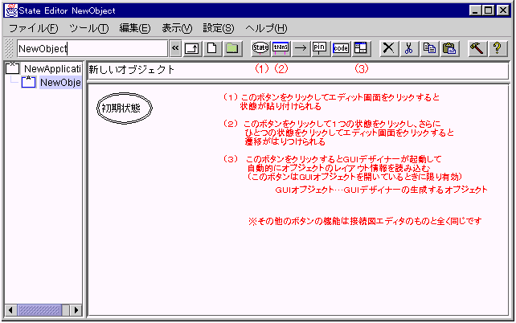
名前の通りaobjectの状態を表現します。単独で使うことはあまりありません。後述の遷移とともに使います。

遷移はオブジェクトのある状態から別の状態への移り変わりを表現します。その動作はuobjectとよくにていますが、実行の流れが状態によって決められているところが異なります。
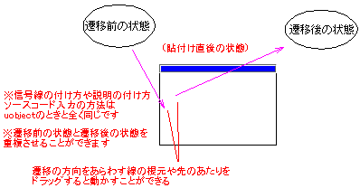
また遷移についている赤紫色の矢印をクリックして付け替えたい状態をクリックすると付け替えることができます。
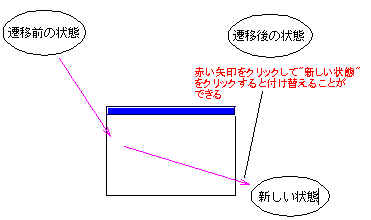
部品棚ではuobjectと遷移は同じ種類のコンポーネントとして取り扱われます。これにより、uobjectを遷移として使ったり、その逆の使い方をすることができます。
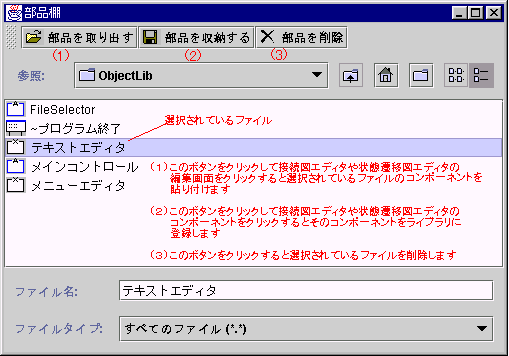
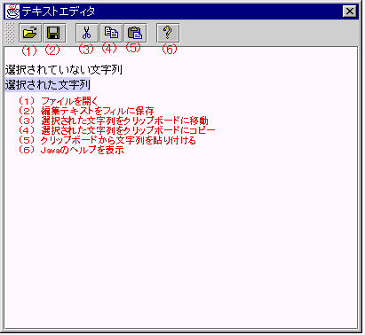
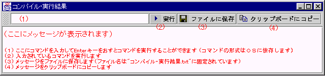
プロパティには大きく分けて"デフォルトのプロパティ"と"プロジェクトのプロパティ"の２つがあります。
"デフォルトのプロパティ"はプロジェクトを新規作成するときにセットされるプロパティですべてのプロジェクトで共通です。
それに対して"プロジェクトのプロパティ"はプロジェクトファイルを開いたときにセットされ、その内容はインポートするライブラリやコンパイル方法など基本的にはプロジェクトごとに異なるものです。
設定ボタンをクリックするとプロジェクトのプロパティの設定ウィンドウが開きます。
現在の設定内容をプロジェクトのプロパティに反映させたければ"OK"を、取り消したいときは"キャンセル"を
設定内容をデフォルトのプロパティに設定したいときは"デフォルトに設定"を、設定内容を新規作成の状態に戻したければ"デフォルトに戻す"をそれぞれクリックして下さい。

※初期状態では設定をWindows
XPに適合させてあります。他のOSで使用する場合にはこの設定ウィンドウを使用して
設定を変更してください。
GUIデザイナー
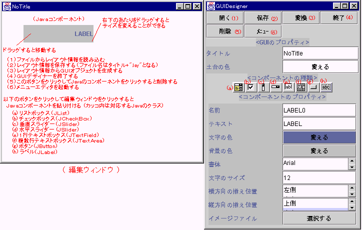
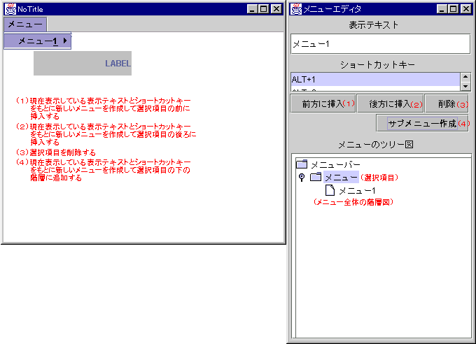
例題
最初はコンソールに"こんにちは"と表示するプログラムをつくります。
(1) まずuobjectを貼り付けます。
(2) 次にオブジェクトの青いところをクリックしてテキストエディタ を起動し、Javaプログラムを入力します。Javaについて分からないところがあれば、エディタの"？"がついているボタンをクリックすると、Javaのヘルプが表示されます。
(4) 最後に"Start()"と表示されているpinとuobjectを信号線で結ぶとプログラムが完成します。このとき信号線の向きに注意して下さい。
これの意味するところは、アプリケーションプログラムは始動するとまず"Start()"とかいてあるpinに信号が出力されるように設定されているので、この信号でuobjectに動作の指示を出しているわけです。
できあがったプログラムのコンパイル･実行の様子を下に示します。

2.Hello World(GUIアプリケーション/ラベルを使う)
次はGUIプログラミング( Graphical User Interface:早い話がウィンドウを使ったプログラム）に挑戦してみましょう。
ここではラベルに"こんにちは"と表示するプログラムを作ってみます。ObjectEditorを起動後、最初にGUIデザイナーを起動してウィンドウのレイアウトをデザインします。
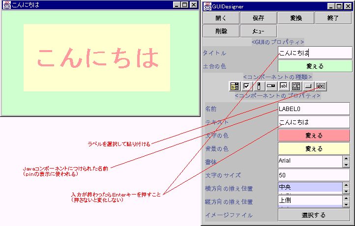
デザインしたら"変換"ボタンをクリックしてGUIオブジェクトを作成してからGUIデザイナーを終了します。
あとはStartピンとGUIオブジェクトのStartピンを信号線で結ぶとプログラムは完成します。
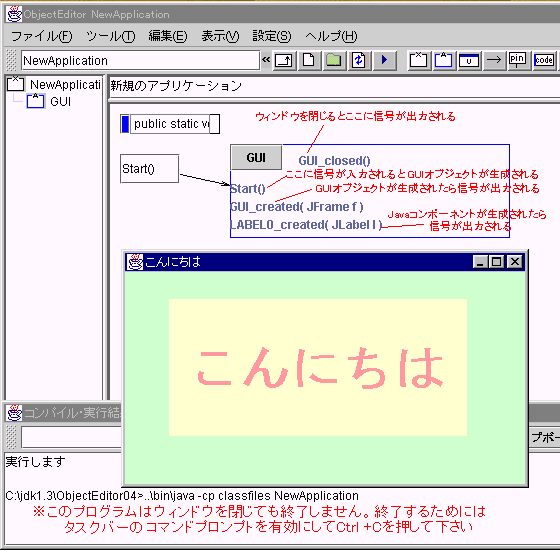
GUIオブジェクトのレイアウトを変更したいときは、GUIオブジェクトの"GUI"と書いてあるボタンをクリックしてGUIオブジェクトを開いてから、GUIデザイナーの起動ボタンをクリックして下さい。
今度はボタンを使うプログラムをつくります。２つのボタンをクリックするたびにラベルにメッセージを表示します。
レイアウト
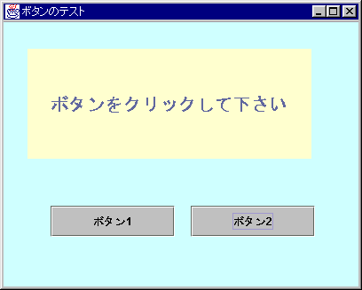
接続図
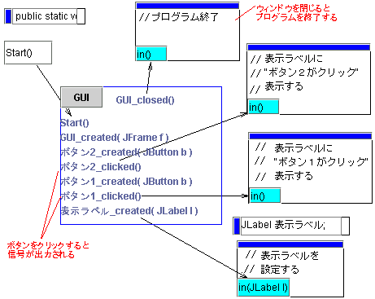
androidプログラムについて
（1）androidプログラムのデバッグには実機をＵＳＢ接続する必要があります
（2）コンパイルする前にプラットフォームの"android.jar"ファイルを作業フォルダにコピーする必要があります
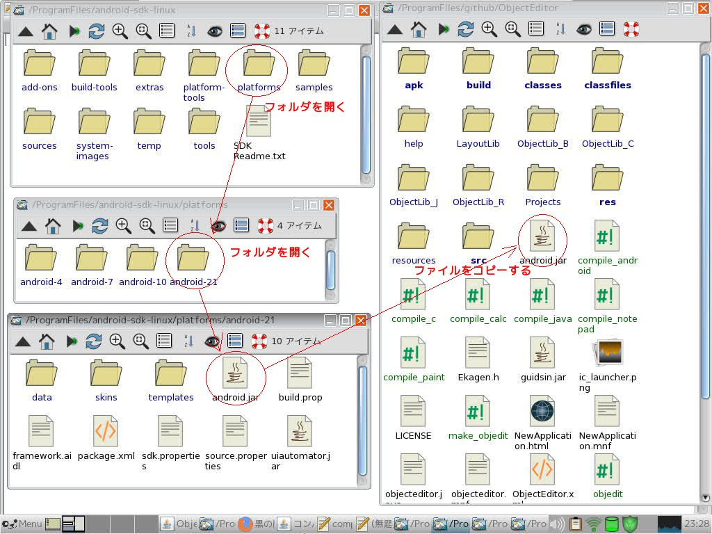
変更履歴
2018.10(ver1.2.2)githubに登録
2014.03(ver1.0)android開発に対応、uobjectや遷移に直接コードを記述するように仕様変更
また吹き出しなど使用頻度の少ないコンポーネントを削除
2005.12(ver0.9)プロジェクトファイルの導入 ／ ユーザーインターフェースを改良 ／ 一括印刷に対応した。
また吹き出しやコンポーネントのグループを追加した。(Wakamoto様 いつもありがとうございます)
2004.8(ver0.8.1)インストールする場所によってはソースコードが正しく表示されないことがある不具合を修正。
2004.8(ver0.8)インストールのときの面倒な設定が必要なくなった。
またver0.7での配布ファイルの不具合を修正した。
2004. 8(ver 0.7) Windows 2000/XPに対応。またユーザーインターフェースに若干の改良を加えた。
(Wakamoto様ありがとうございます)
2003. 8(ver 0.6) C++のソース生成機能を追加。 またオブジェクト上のピンをダイレクトに(オブジェクトを開くことなく)追加、削除したり名前を変更することができるようになった。
2003. 6(ver 0.5) ファイル形式をXMLに変更、ソースコード生成機能のバグ修正＆改良。またライブラリにはXMLパーサを追加。
2003. 5(ver0.4)
オブジェクトの種類にuobjectを追加、部品棚の導入、印刷、テキストエディタ等の機能(THX.黒須様)を追加。またGUIデザイナーにメニューエディタの機能を追加。
2003. 1(ver0.3) 全体の機能やデザインを統合開発環境風に変更。GUI上でコンパイル･実行ができるようにした。また状態遷移図エディタにおいては条件遷移に対応。
2002.9(ver 0.2) GUIレイアウトデザイン機能を追加。またファイル形式を変更して大きなサイズのプログラムを作成できるようにした。
2002.5(ver 0.1) 初版完成
本ソフトをご利用いただきありがとうございます。
ご意見、ご要望、バグ報告などございましたら以下のアドレスまでメールをお送りくだされば幸いです。
(次のバージョンに反映させたいので)
kousoz80 rscqr931@yahoo.co.jp